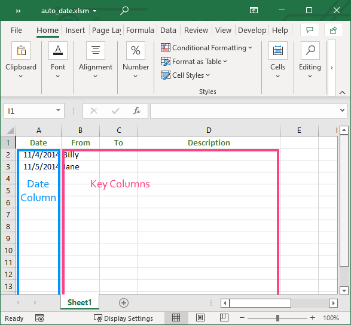

Spreadsheet with Auto Date Column
In the past, several people have asked me if there is a way to get
Microsoft Excel to automatically fill in today’s date in a column.
These people have tried the =TODAY() function only to find
that it updates the date to the current date each time the spreadsheet
is opened. What they really want is a spread sheet that when they enter
data in one column, the sheet will automatically enter today’s
date in a different column. There may be some built-in functionality in
Excel that will do this, but I am unaware of it. So, I wrote a short VBA
macro that will fill in a date column.
After you have downloaded the Excel file, opened it in Excel, and enabled macros, you will be able to enter anything in columns B, C, or D, and Excel will automatically enter today’s date in column A of the same row.

You can view the VBA macro by pressing
and then double clicking on
. I also copied the VBA macro below.
If you want to change the location of the date column, then change the
value of dateCol variable. For example if you want Excel to
automatically enter the current date into column B, then change
dateCol to 2. In other words change line 11 of the macro to
be
dateCol = 2
If you want to change the location of cells that cause Excel to enter
a date, then change the value of keyCells. For example, if
you want any data entered into columns C, D, and E, then change
keyCells to "C1:E32765". In other words change line 5 of
the macro to be
Set keyCells = Range("C1:E32765")Warning: don’t change the dateCol or
the keyCells so that they overlap. For example dont’t
change dateCol to 3 and leave keyCells as
"B1:D32765" because 3 means column C and B1:D3275 includes column C. In
other words they overlap. Doing this will probably cause Excel to freeze
or crash.
Private Sub Worksheet_Change(ByVal target As Range)
' keyCells contains the range of cells that when
' they are changed will cause a date to be entered.
Dim keyCells As Range
Set keyCells = Range("B2:D32765")
If Not (Application.Intersect(keyCells, target) Is Nothing) Then
' dateCol contains the index of the column
' where the date should be entered.
Dim dateCol As Integer
dateCol = 1
Dim startRow, endRow, startCol, endCol As Integer
Dim row, col As Integer
Dim dateCell, currCell As Range
startRow = target.row
endRow = startRow + target.Rows.Count - 1
startCol = target.Column
endCol = startCol + target.Columns.Count - 1
For row = startRow To endRow
Set dateCell = Cells(row, dateCol)
' If the date cell is empty then check to
' see if other cells in the row have data.
If dateCell.Value = "" Then
For col = startCol To endCol
Set currCell = Cells(row, col)
' If the date cell is empty and at least
' one of the cells in the same row has
' data, then enter a date in the date cell.
If currCell.Value <> "" Then
dateCell.Value = Now()
Exit For
End If
Next col
End If
Next row
End If
End Sub